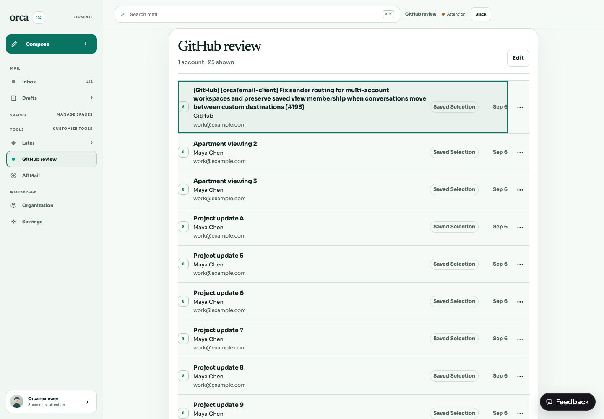
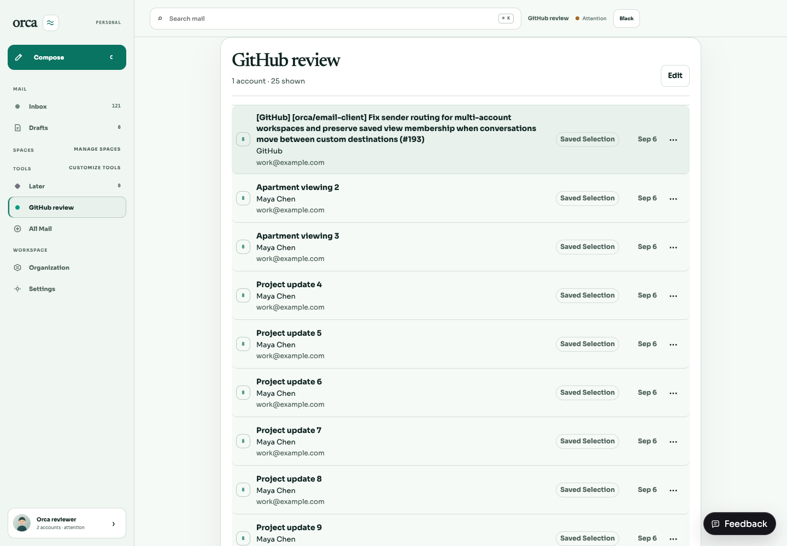
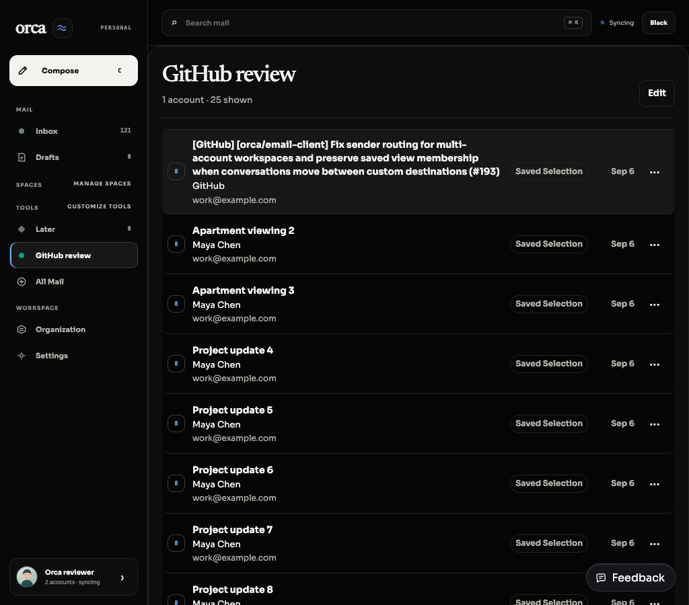

BRE-406 / BRE-410 follow-up. One Organization workspace item opens sender management in desktop, Settings sidebar, and mobile navigation. Sender title and workspace header agree. Advanced organization entry points are removed. Legacy ?destination=organization resolves to sender management; internal saved-view authoring retains ?destination=organization-studio, including reconnect return navigation.
Hover now covers the row and trailing actions with one subtle rounded surface. A distinct outline is reserved for keyboard focus on the message button. Long subject wrapping, fixed date, and action geometry remain intact.
The original hover CSS was restored in-browser on the same real saved-view page for this comparison. Navigation already reflects the update.


Dark theme tokens applied in-browser; the theme toggle label remains from the light-mode React state.

Disposable real SQLite/Hono/Vite environment, authenticated reviewer, real prepare/preview/commit API creating the saved view. The scratch mail subject was replaced with a long GitHub notification subject. No production data touched. Named headless agent-browser session closed and scratch server stopped.
Remaining integrated verification: dark 1440px, light 1024px, keyboard focus and pointer-click focus distinction, all control states, mobile and Settings navigation visuals, saved-view edit/reload smoke test. Focused tests: 12 passed, 0 failed (6 navigation contracts, 1 mobile keyboard/navigation flow, 5 App legacy/reload/Settings flows). Commands: bun test apps/web/src/navigation.test.ts; bun test apps/web/src/desktop-switch.interaction.test.tsx --test-name-pattern "keeps every destination"; bun test apps/web/src/App.interaction.test.tsx --test-name-pattern "links reopen Organization|internal authoring link|Settings Organization navigation|Settings opens the same Customize". Broad build/typecheck deferred to integration as requested.